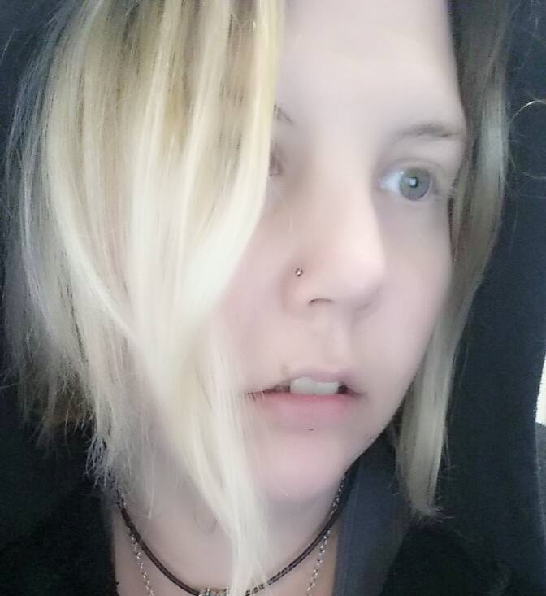

VPC Team Credits
Site Author, NCHH Admin: Jordan Mynes

Current student of Illinois Institute of Technology and face of Nerdy Nonsense, majoring in studying Information Technology and Management (ITM). Interests include: Bitcoin, Free Open Source Software (FOSS), college/pirate radio, and computers. LinkedIn: here
Jordan designed this website for free, for use with the Vocalist Producer Challenge IV, which he has awaited with excitement for some time. If you would like to support Jordan's efforts, you can donate: here
You can also donate with Bitcoin to:
 16FCxtMFUk8nBgtSohSPS8uyc759gy8Q4A
16FCxtMFUk8nBgtSohSPS8uyc759gy8Q4A
Logo Designer: Twill Distilled

Originally from the DMV Area, Twill grew up near Baltimore. She studied voice and received musical training through her time spent with the Peabody Preparatory out of John's Hopkins. In her later years, she went to university for fashion design, but still kept her passion for music and performing. She now lives in Columbus Ohio, working as an art director by day and grinding hard with her musical efforts at night.
Fast forward to 2015, this girl has been up and down the east coast performing in NYC, T-mode anime convention in Maryland, and Orlando Nerd fest. She completed her first mini tour throughout Ohio, and, even landed a track produced by Chris Lord in Vivien Lesnik Weisman's Documentary "The Hacker Wars". Twill has tunes that you can catch on Nerdy.FM's rotation as well as other features on blogs such as Unheard Nerd and Geek-E-Inc !
Her debut album, “Planet Twill” is now out on bandcamp! Check it out at: Twilldistilled.bandcamp.com
Soundcloud: twill_distilled
Twitter: @TwillDistilled
Nerdcore.co Hosting, NCHH Admin: Niik (LampedGod)
Connoisseur of Dat Boi memes
VPC Admin, NCHH Admin: Whitney Harper
